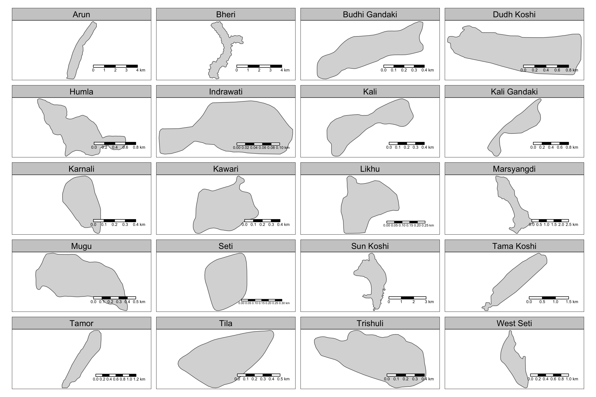
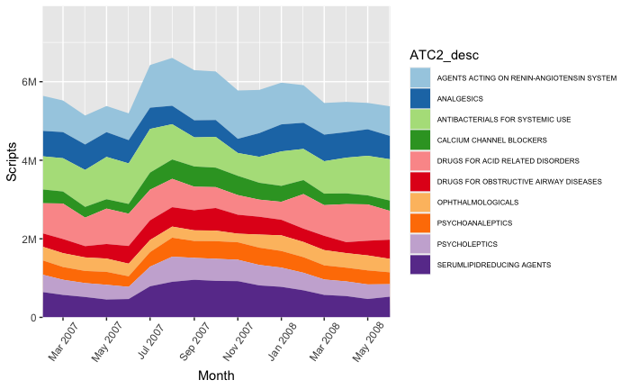
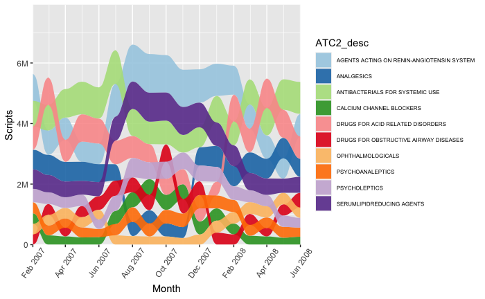
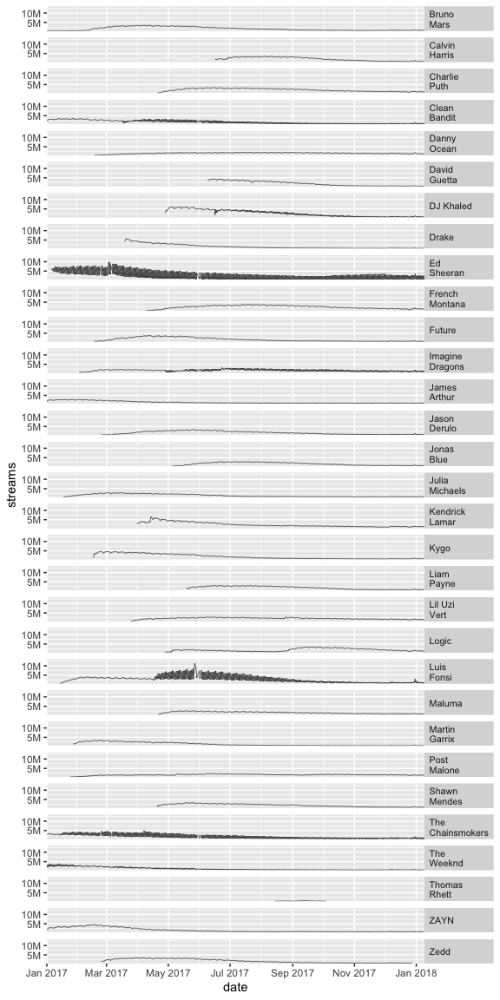
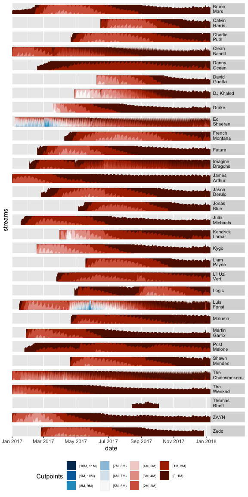
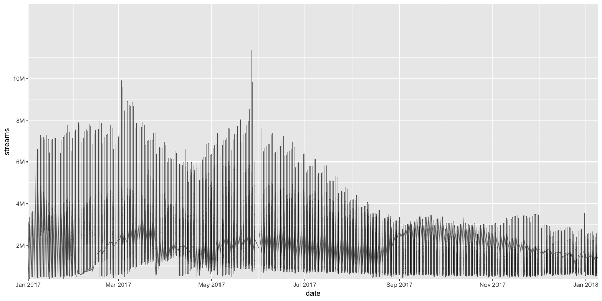

Problem Set 3
Kai Cui
Problem 1
a.
There are 3624 lakes in this dataset. The latitude /longitude of the largest lakes in each Sub-basin:
| Sub-basin | Latitude | Longitude |
|---|---|---|
| Arun | 28.37403 | 86.30475 |
| Bheri | 29.19634 | 82.94822 |
| Budhi Gandaki | 28.59618 | 84.62826 |
| Dudh Koshi | 27.89853 | 86.9251 |
| Humla | 30.12892 | 81.78076 |
| Indrawati | 28.04209 | 85.71757 |
| Kali | 30.56462 | 80.17877 |
| Kali Gandaki | 29.2185 | 83.70156 |
| Karnali | 29.64815 | 81.55488 |
| Kawari | 29.89755 | 81.57738 |
| Likhu | 27.71321 | 86.54286 |
| Marsyangdi | 28.69089 | 83.85184 |
| Mugu | 29.75376 | 82.41434 |
| Seti | 28.44681 | 84.11694 |
| Sun Koshi | 28.32223 | 85.83813 |
| Tama Koshi | 27.94679 | 86.44713 |
| Tamor | 27.86953 | 87.86618 |
| Tila | 29.38408 | 82.42375 |
| Trishuli | 28.46783 | 85.51938 |
| West Seti | 29.77282 | 81.52618 |
b.
c.

Problem 2
a.
b.
c.
Stacked Area
- Weakness: The order of data for different groups does not change over time, which means it is difficult to compare which prescription drugs were used the most during the same period (especially after the quantity has changed).
- Strength: We can clearly observe the changing trends in the overall usage of these prescription drugs.
- Queries easier to answer: In which month PSYCHOLEPTICS and SERUMLIPIDREDUCING AGENTS (the two medicines at the bottom in the picture) combined have the most use?
Alluvial Visualization
- Weakness: Because we don't have a single dimension to faceting with, putting all ten variables in one graph looks messy. When multiple variables change ordering in a month, the plot on this month does not provide much information.
- Strength: The variables are arranged in an orderly manner, and we can always know which drug is used the most in a given month.
- Queries easier to answer: How a drug's ranking among all these prescription drugs changes over time?
Problem 3
a & b.
  c.
Part (a) interactivity:
- The structure of interaction: I will use
d3.lineto draw all these time series simultaneously, and then update a part of them when the mouse moves. - How would the display update: When the mouse moves, the time series line closest to the mouse will be highlighted, for example by changing its attributes in the 'attrs', such as the stroke (turning red) and stroke-width (becoming thicker).
- One type of D3 selection or mouse event I would like to use:
d3.select("svg").on("mousemove",...)andd3.selectAll("#lines").selectAll("path").... This will detect the movement of the mouse and then trigger an update event.
Part (b) interactivity:
- The structure of interaction: I will use
d3.areato define the shape of the data. I will add a slider to adjust the 'band', which refers to the 'origin' parameter in thegeom_horizon()plot. This will change the coloring range and display range of the horizon plot. - How would the display update: When the user slides the slider, the display of the horizon plot updates accordingly. A smaller 'band' will reduce the number of shadings and show a more global view, while a larger 'band' will increase the number of shadings and reveal more detailed variations.
- One type of D3 selection or mouse event I would like to use:
d3.selectAll("#horizons").selectAll("path")...will be called when the slider updated.d3.select("#mySlider").on("input", function() { var sliderValue = d3.select(this).property("value");...}can be used to recognize slider changes.
Problem 4
a.
c.
One possible interactivity is highlighting the time series when the a county is hovered.
d.
Problem 5
a. geom_stream
- Role: To visualize how the total number and composition of character appearances change over issues.
- Hypothetical use: Imagine you want to describe the demographic trends of different occupations in a certain area.
b. tm_lines
- Role: It is used to draw lines on a map. It is very useful for objects like rivers.
- Hypothetical use: Imagine you want to describe the distribution and flow direction of rivers in a certain area.
c. rast
- Role: It is used to process raster dataIt is used to process raster data. Raster data gives measurements along a spatial grid and may contain multiple channels. This allows this kind of data to efficiently represent information such as land cover.
- Hypothetical use: For example, we want to know the geographical distribution of a certain plant in an area.
d. geom_horizon
- Role: This function is used to create horizon plots, a type of visualization that is effective for displaying time series data where space is limited. It layers and colors different segments of the data, allowing multiple time series to be compared in a compact format.
- Hypothetical use: For example, we want to compare the temperature changes in several regions within a year.
Problem 6
a.
- Description of a spacial dataset: The locations of various products within a supermarket.
- Visual encodings:
- Graphic Representation: Different shapes represent different types of products.
- Color Coding: Different colors for different product categories.
- Signage System: Specific locations of items marked on the map.
- interactivity: None.
b.
Questions answered by the visualization: How to find a specific product, like bread, in the supermarket.
Accuracy and ease of finding answers: With the current design, it can be quite challenging due to the extensive variety of products and dense information on the map, especially for new customers.
c. Alternative visualization
- Concept:
- Use different colors to indicate major product categories (e.g., green for fresh produce, blue for frozen foods).
- The map highlights the locations of items on the customer's shopping list.
- Reason for this idea: A dynamic, interactive map can significantly reduce the time taken to find products, especially helpful for those unfamiliar with the store layout. Customers can add items to a shopping list in advance, knowing approximately how long they will spend in the supermarket, aiding in planning subsequent activities.
- Advantages: Speeds up the process of finding desired products.